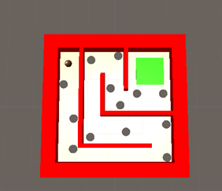

Démarche d'expérimentation
Document Nécessaires
Ci-dessous la liste de tous les outils qui ont été nécessaire à la fabrication du prototype ainsi qu’une courte description de leur utilité.
-
Unity 5.2.2
- Engin Physique primordial à l’expérimentation. Ce logiciel sert à la conception des labyrinthes en modèle 3D, gérer l,environnement 3D du jeu, gérer la physique des modèles ainsi que le la capture vidéo.
-
ArToolKit Unity Package
- Paquet Unity contenant tous les fichiers de base nécessaire à la confection d’un environnement d’AR. Le package comprends toutes les librairies utiles pour l’AR, des scènes exemples, des textures ainsi que des modèles.
-
ArToolKit Additionnal Unity tools
- Une multitude d’outils divers qui ont pour but d’optimiser la création d’un jeu AR. On peut y retrouver un outil de calibration de la caméra, d’optimisation d’image et aussi de création de marqueurs.
-
Visual Studio
- Logiciel de programmation servant à éditer des scripts d’Unity en C#. Il est utile pour coder les différents comportements des objets dans Unity.
Suivi des activités de recherche
Recherche documentaire
Avant de commencer notre expérimentation, nous avons fait une recherche documentaire sur la réalité augmentée. Par exemple, nous avons commencé à faire de la recherche sur les marqueurs, l’éclairage ambiant et les matériaux de marqueurs.
Création du projet Unity 3D
Nous avons commencé par créer un projet sur Unity3D. Dans la scène qui vient de se générer, on doit importer “ArToolKit Uniy Package”. Maintenant que nous avons tous ce qu’il nous faut pour créer une scène de réalité augmentée, nous pouvons placer les composantes.
Pour placé les composantes aux bons endroits, veuillez suivre se tutoriel :
http://artoolkit.org/documentation/doku.php?id=6_Unity:unity_getting_startedUne fois les composantes de la scène aux bons endroits, nous pouvons ajouté l’objet 3D que nous désirons dans le “Marker Scene”. Il faut bien faire attention que le “Layer” de tous les objets que nous voulons faire affiché soit le même que le “Culling Mask” de notre caméra sinon ceux-ci ne s'afficheront pas. Si vous désirez faire avoir plusieurs marqueurs qui affichent des formes différentes, il suffit d’ajouté autant de “ArMarker” dans le “ArController” et de composants “ArTrackedObject” qu’il a de marqueurs différents dans la scène.
La calibration de caméra
En tout premier lieu, il faut imprimer sur papier une image de calibration. Cette image quadriller se trouve dans ”doc/patterns/Calibration chessboard (A4).pdf” à partir du fichier d’outils d’ArToolKit.

Pour commencer la calibration, il faut exécuter un des outils qui s'appelle “calib_camera.exe”. Il est fortement suggérer de démarrer cet outil en ligne de commande avec les paramètres suivants : calib_camera.exe -vconf “-flipV -devNum=X. -flipV inversera la caméra à la vertical, car celle-ci est inversé de base et -devNum=X ce charge de décidé qu’elle caméra sera utilisé dans la calibration (X étant le numéro de la caméra). Si votre ordinateur possède seulement une caméra, ce paramètre est peut-être inutile. Quand l’outil se lance, vous aurez alors une fenêtre avec le flux de votre caméra. Maintenant vous pouvez prendre votre caméra et prendre des photos de la feuille quadrillée imprimé plus tôt sous différents angles (appuyer sur espace pour prendreune capture).
L’outil essayera de détecter et d’identifier les 35 coins qui se touchent sur la feuille quadrillée. Si tous les coins se trouvent sur le flux de caméra, tout le texte à l’écran deviendra rouge et vous pourrez alors prendre votre première capture.

Si un ou plusieurs des coins ne sont pas détecté par la caméra, tout le texte à l’écran deviendra vert.

Après avoir pris 10 captures, l’outil vous demandera de choisir le nom du fichier de calibration. Ensuite il suffit de placer le fichier de calibration dans le projet Unity3D ou se trouve le fichier de calibration par défaut (“Assets\ARToolKit5-Unity\Resources\ardata”). Il est important de changer le format du fichier en « .bytes », car votre projet Unity3D li le fichier de calibration dans ce format. Pour finir, il suffit de spécifier le nom du fichier dans l’éditeur d’Unity.

Les marqueurs
Maintenant que la scène est prête et que la caméra est calibrée, il faut créer des marqueurs physiques. Il est possible d’utiliser les marqueurs par défaut d’ArToolKit (Hiro, par exemple), mais si votre projet demande plusieurs marqueurs différents, il est possible d’en créer avec un outil de « ArToolKit Additionnal Unity Tool ».
ArToolKit fournit un gabarit de marqueur (une image de carré noir) dans le fichier « /doc/patterns » à partir du fichier de « ArToolKit Additionnal Unity Tool ». Il suffit d’ajouté une forme à l’intérieur, comme dans cet exemple-ci :

Il est important de noter que les formes avec beaucoup de coins visibles sont à priorisé. Il faut également faire attention que notre forme ne puisse pas être identiques dans plusieurs sens; si on tourne le marqueur, il faut qu’ArToolKit puisse détecter le sens du marqueur pour bien afficher les objets. Nous pouvons maintenant imprimer notre marqueur sur une feuille de papier.
Pour être capable de reconnaitre le marqueur physique que nous venons de créer, il faut créer sa copie binaire. Pour se faire, il faut utiliser un autre outil de « ArToolKit Additionnal Unity Tool »; il se nomme mk_patt.exe. Au lancement de l’outil, un flux vidéo s’affichera à l’écran. Il suffit d’y placer le marqueur. Si le marqueur est détecté, un indicateur montera le marqueur en plan rapproché comme ceci :

Il suffit de cliquer sur le flux vidéo pour sélectionner ce que l’outil voit comme étant le marqueur. Ensuite, la console de l’outil demandera le nom du fichier binaire représentant le marqueur et le sauvegardera dans le fichier de l’outil. Il est important de changer le nom du fichier pour « patt.nomFichier.txt ». C’est sous cette nomenclature qu’Unity détectera que ce fichier est un marqueur en binaire. Pour finir, il faut placer le fichier dans « /Assets\ARToolKit5-Unity\Resources\ardata\markers » à partir du projet Unity. Il est maintenant possible de sélectionner ce marqueur dans la liste déroulante de marqueur dans la composante « ArMarker ».
Le jeu
Maintenant que nous avons tous ce qu’il nous faut pour faire une scène de réalité augmentée, il ne reste qu’à laisser place à l’imagination. Tant que le ou les objets sont dans le « Marker Scene » et qu’ils ont le masque du « Culling mask » de votre caméra virtuelle, ils s’afficheront.
Pour ce qui est de notre prototype, si vous souhaitez faire quelque chose de similaire, il suffit de créer un labyrinthe qui ressemble à ceci :
Pour la suite, vous remarquerez que les objets ne bougent pas dans la scène quand on incline le marqueur. En effet, c’est la caméra virtuelle qui effectue une rotation autour du centre du marqueur. C’est avec cette caméra qu’on réussit à faire bouger la balle car le labyrinthe ne s’incline pas, comme expliqué plus haut; donc la balle ne subit aucun effet de la gravité.
Déplacement de la balle
Nous avons découvert que la caméra pointe toujours dans la direction d’inclinaison de la balle. De plus, la balle a besoin d’aller dans la direction de l’inclinaison si l’on veut qu’elle donne l’effet de subir les effets de la gravité. Heureusement, Unity3D possède en mémoire un vecteur (Vector3D) nommée “gravity” dans sa classe “Physics”. Ce vecteur émet une force sur les objets sensibles à la gravité (dans ce cas, seulement la balle). Par défaut, le vecteur pointe vers le bas en ligne droite; par contre, si on change l’angle du vecteur de gravité pour l’angle de direction de la caméra, nous sommes en mesure de faire déplacer la balle dans la direction désirée. Voici le script qu’il faut attacher à la caméra pour que la balle se déplace :
Physics.gravity = transform.forward;
Et voilà ! Si on démarre la solution, nous pouvons incliner le marqueur devant la caméra et la balle se déplacera dans le labyrinthe. À partir de maintenant nous pouvons ajouter des trous ou une destination pour gagner le niveau (comme dans notre prototype). En fait, les possibilités sont presque infinies en ce qui concerne ce qu’on peut ajouter au prototype. Notre but étant atteint, nous en sommes restés là.